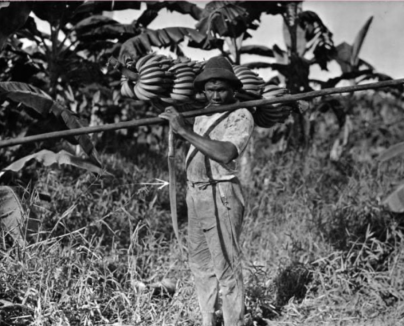
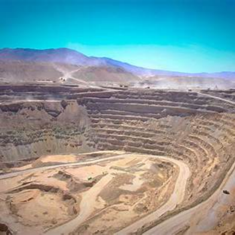
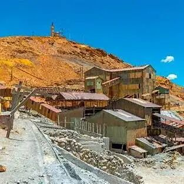

哥伦比亚：马孔多在下雨，香蕉工人被屠杀
在古兰经里，香蕉树是天堂之树。但在哥伦比亚人心里，香蕉是灾难的代名词。
马孔多是马尔克斯笔下的小镇，也是他从哥伦比亚的外祖父家到波哥大搭火车时，经过的一个真实的香蕉园。
就在加勒比海沿岸，无数像马孔多一样的香蕉园外，铁路贪婪地从北方伸来。园内的男性劳工鲜有当地人，他们受美国联合果品公司的充满诱惑的招聘信息吸引，又被堆积如山的香蕉，无休止的采收装运工作，破烂的住宿与医疗条件压垮。

香蕉工人背香蕉
罢工的念头盘踞在工人心中。
1928 年 11 月 12 日，一个蕉园空无一人，果园里弥漫着浓烈的、熟透的香蕉气味。
罢工的声音从一个蕉园，传递到另一个蕉园，直到整个加勒比海沿海区的蕉园加入抗争。
一个月后，哥伦比亚当局再也受不了果品公司的施压，枪声在火车站响起，香蕉工人应声倒地。我们不知道确切的死亡人数是最初官方通报的7 人，还是大使馆电报中所述的逾千人，亦或是《百年孤独》中记述的三千人，但关于屠杀的记忆永远留在了文字里——
“当火车驶过一座座沉睡的村庄，借着板条间映进的光线，他看见了男人的尸体，女人的尸体，儿童的尸体，他们都将像变质的香蕉一样，被丢入大海。”
魔幻现实，亦取材于现实。哥伦比亚的铁路，串联起了美国的香蕉园而非居民的生计；哥伦比亚满满当当的火车，象征着单一经济下最重要的收入来源；哥伦比亚的政府，动用国家暴力帮助殖民公司屠杀本国农民。在依附经济结构下，除了香蕉以外，咖啡的行情也关乎着国计民生——如果你曾看过安蒂奥基亚省结婚率曲线，就会惊奇地发现，它竟然是完全随着咖啡价格曲线上下波动的。
智利：掠夺海鸟粪，铜矿国有化
拉美国家身上发生的现实，可能荒谬得超过小说家的想象。如果说拉美有什么称得上是“白色金子”，在银以外，一定还有硝石和海鸟粪。就在欧洲土壤氮肥力告急之时，英国化学家发现海鸟粪作为肥料性能优越，把贪婪的目光抛向太平洋沿岸的秘鲁岛屿。
秘鲁沿岸寒流形成的天然渔场，上千年来吸引了大量海鸟驻足。
但不出几年，在秘鲁的挥霍下，鲣鸟与海鸥世代堆积的白色财富就被卖得一干二净。
正在此时，智利与玻利维亚起了税收矛盾，秘鲁也作为玻利维亚的同盟参战。三国之战带来的结果是，秘鲁失去了它的鸟粪和硝石资源，工业被严重破坏；玻利维亚失去了它的入海口，经济逐渐萎缩。
或许我们会想，智利是这场战争中最大的胜利者。的确，它繁荣过，在那里历经战争的老人说：
“那时在硝石产区，每个星期日对我们来说都像国庆，我们每星期都过一次独立日。”
事实上，三国中没有一个国家真正在鸟粪战争中获益：当智利逐渐觉得自己可以与阿根廷，巴西比肩时，对硝石矿的依赖也日益加重——在德国化学家的哈伯制氮法推出之时，智利大概是最不能，也最不愿相信，空气可以制氮方法的国家。
不久之后，铜取代了硝石，成为了下一个循环。铜是智利20 世纪最主要的经济支柱，占世界探明铜储量的三分之一。在 1970 年阿连德当选智利总统之前，这里铜矿的 90%都掌握在美国公司手里。为了保护让铜矿藏不再外流，阿连德将铜矿的产业逐渐收归国有。

智利 Chuquicamata 铜矿的开采现场
本应该是依附国的智利，却在拉美有意识地发展经济，让昔日的主导国美国感到不满。1973 年的 9 月 11 日，阿连德在美国的胁迫下没有选择逃亡，而是拿着卡斯特罗赠与他的冲锋枪，走向临时的广播台，坚定地说道：“我的牺牲绝对不是白费的。”
话音刚落，冲锋枪响永远地带走了这个试图打破循环的人。
古巴：患糖尿病的经济，切格瓦拉的雪茄
古巴的特立尼达镇，是古巴经济，乃至拉美经济的一个缩影。它有着让人难以忘怀的景色：背山靠海，马卡龙色的房屋，高低不平的鹅卵石街道，傲然耸立的无声的钟楼以及缓慢的，古老的敞篷马车……但现在的它，还有另外一个名字，叫“曾经有过城”。因为这里的白人后代经常说，他们的某个祖辈“曾经有过权利”，“曾经有过荣誉”。
毫无疑问，这座城市早已成了一具闪闪发光的尸体。
特立尼达的故事，是一个“眼见他起高楼，眼见他宴宾客，眼见他楼塌了”的悲剧。
1514 年，哥伦布手下迭戈·德奎利亚尔发现了并建立了这座古老而美丽的城镇，但也直接注入了殖民的血液：西班牙风格的高楼拔地而起。
1762 年，欧洲对糖的狂热催促着商人开垦新的土壤。随着英国人的入侵，古巴被输入了大量奴隶，糖业在富足的劳动力下随之发展。为了扩种甘蔗，原始森林被大火烧毁，土壤大大消退，但殖民者不在乎。19 世纪中叶，海地的叛乱让古巴成为了当之无愧的蔗糖之国——作为古巴三分之一的甘蔗产出地，特立尼达四十多家糖厂拔地而起，让整个城镇呈现着繁荣、富裕、美好的假象，夜夜笙歌。
而1857 年糖价下跌之后，特立尼达迅速衰落，蛀空，归于沉寂，并且再也没有崛起过。高楼终究是塌了，而盆满钵满的殖民者却满载而归。
糖和烟草是单一经济的屠刀，却也是发展的唯一解药。古巴革命之时，愤怒的农民，蔗糖工们在卡斯特罗和切格瓦拉的领导下毁灭了众多蔗糖田。但不依赖糖，古巴还剩什么呢？矿业需要投资，渔业需要投资，外汇需要糖的出口……革命成功后不久，切·格瓦拉接待了萨特。格瓦拉抽出一支雪茄，点燃，递给萨特：
“除了里面的烟丝以外，包装纸、包装盒、套烟上的金属圈，我手里的打火机，没有一样是古巴生产的。古巴只能生产里面的烟丝，最初级的产品，这就是古巴的处境。”
烟丝如此，蔗糖也是如此：“古巴只是一个生产原料的工厂，出口蔗糖以进口糖果……”
切·格瓦拉抽雪茄
萨特对这个深受糖尿病经济之害的国家深叹一口气，“在蔗糖上面进行建设，是不是总归比在沙地上进行建设要好一些呢？”
玻利维亚：银山锡山，终成龋齿
波托西的故事，和特立尼达有异曲同工之妙。又或者说，它们本就是一样的循环。
在西班牙人来临之前，印加王已经发掘了这里山峦的奥秘，用金银祭神。但直到殖民者到来，波托西才成为了人人倾倒的神圣之地，投机者、矿井、与白银如止不住的血源源不断地涌出。炸药将山炸空，洞口边的富含矿物的岩石五彩缤纷，但大家最关心的还是白银。
如果用数字概括波托西，三百年，五千个矿井，八百万条印第安生命，就能概括出所有殖民者的疯狂和原住民的苦难。在这之后，金银消失殆尽，剩下的只有哭泣的印第安灵魂。

波托西 Cerro Rico 的矿区与山体景象
但玻利维亚的故事，不止步于白银。
《百年孤独》的开篇，老布恩迪亚罔顾妻子阻挠，拿一头骡子，一对山羊换了吉普赛人的两块小磁铁。哪怕实诚的吉普赛人告诉他磁铁无法吸住黄金，老布恩迪亚还是留住了磁铁，想象自己自此就能拥有堆积如山的金子。他四处“勘测”了那片地区的每一寸土地，最后除了破铜烂铁什么也没有发现。
衰落后的金银矿山就像这块磁铁，给了玻利维亚人幻想的空间——他们总觉得还能找到些什么。在银矿被掏空之后，锡从垃圾变成了宝藏。
但那是1894 年，最细碎的银粒都被西班牙悉数带走了。那时西蒙·帕蒂尼奥还是一个毛头小子，但他比老布恩迪亚幸运的是，磁铁没给他带来金银，却带来了质量最好的锡。他在刚炸开的山洞中，握着亮得晃眼的锡矿石，双手颤抖。
银山、锡山渐渐塌落，蛀空，成为了玻利维亚千疮百孔的龋齿。
墨西哥：最明净的地区，黑色兀鹫盘旋
墨西哥，这个曾经驯化了玉米的古文明国度，一样没有逃离诅咒。
墨西哥拥有最华丽的表层：环山的盆地、宜人的气候、繁荣的轻工业与农牧业，被远渡重洋到来的洪堡博士赞誉为“最明净的地区”。
明净的地区在1535 年之后就日渐疮痍。
因为，享用这里富饶资源的人并不是墨西哥人民，而是西班牙王室。
墨西哥血液中的高等教育资源、商业繁荣的硕果全都顺着管道输向宗主国；墨西哥民众无法在血管的任意一个环节把关，因为殖民地民众无法身担政府要职；血管内壁回荡着天主教会的紧箍咒，把每一个残存的缝隙填满。
环山的盆地让污浊的空气难以排出，频繁的政治动乱让墨西哥的风气浮躁不安。
诅咒持续在灵验。
拥有财富与失去财富的反复让这个地方的人永远相信奇迹与神话，但疯狂后的警醒比起多数人的欲望几乎可以略去不提。《最明净的地区》刻画的就是那样一个时代的墨西哥故事——主人公罗布莱斯，在 1910 年的资产阶级革命中参与起义，几乎送命，政治的阴霾盘旋上空；经过起义的罗布莱斯冷酷无情，将财富视为唯一追求并通过投机成为举足轻重的大银行家，经济的弊病暴露无遗；事业巅峰一瞬间被股票的巨跌破灭，他在绝望之中将原有财富付之一炬，从此与双目失明的印第安女人结婚，隐姓埋名。
罗布莱斯的梦醒了，但其他人还在梦中。1976 年，大规模的石油资源让墨西哥又拥有的做梦的资本：
“你看到过把原油抽出来的机器吗？它的样子很像一只庞大的黑色兀鹫，尖尖的脑袋沉重地一上一下，日日夜夜，一刻不停。”
兀鹫意味着更好的教育，医疗服务，同时意味着严重的贸易和财政赤字，意味着高额的外债，乃至债务危机。
形似兀鹫的石油钻机
结语：在时间中绕圈的拉美
五块碎片，光怪陆离，却又都在讲述同一个故事。
“西班牙人走了，英国人来了，拉丁美洲的命运依然如故。英国人走了，美国人来了，拉丁美洲的命运依然如故。”
克里斯托弗·哥伦布于1492年首次登陆美洲
这些从外来临的国家，都希望让拉美人民相信：时间和发展，是线性的、向前的、光明的。明天永远比今天更好。但是魔幻现实主义的小说帮我们还原了那个真实的、一直在绕圈的、依附于别国的拉美时间。银、锡、铜、糖、石油、香蕉、咖啡都是经济发展的动力，但动力却从拉美的血管中不断地流失。
小说家用故事叙述拉美循环的时间，而经济学的“依附理论”让拉美人民知道，穷，不是因为你不够努力。穷是依附发展的不幸结果，是买办经济的必然之路。有钱的买办不会让民族更强而只会成为蛀虫。
唯一的突破口是——尽可能地学会用自己的两条腿走路，寻求非吸血式的合作，摆脱依附性经济结构，打破循环。或许，命运不在上帝的膝头，而在人们的思想意识之上。
参考资料
1. 爱德华多·加莱亚诺.《拉丁美洲被切开的血管》. 南京大学出版社，2018.
2. 杨照.《马尔克斯与他的百年孤独》. 广西师范大学出版社，2019.
3. 加西亚·马尔克斯.《百年孤独》. 南海出版公司，2017.
4. 富恩特斯.《最明净的地区》. 译林出版社，2008.